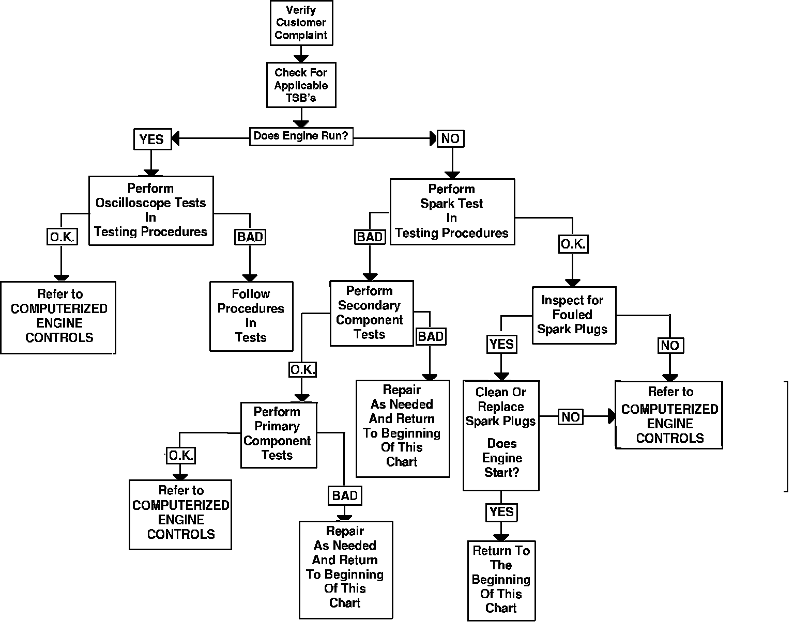
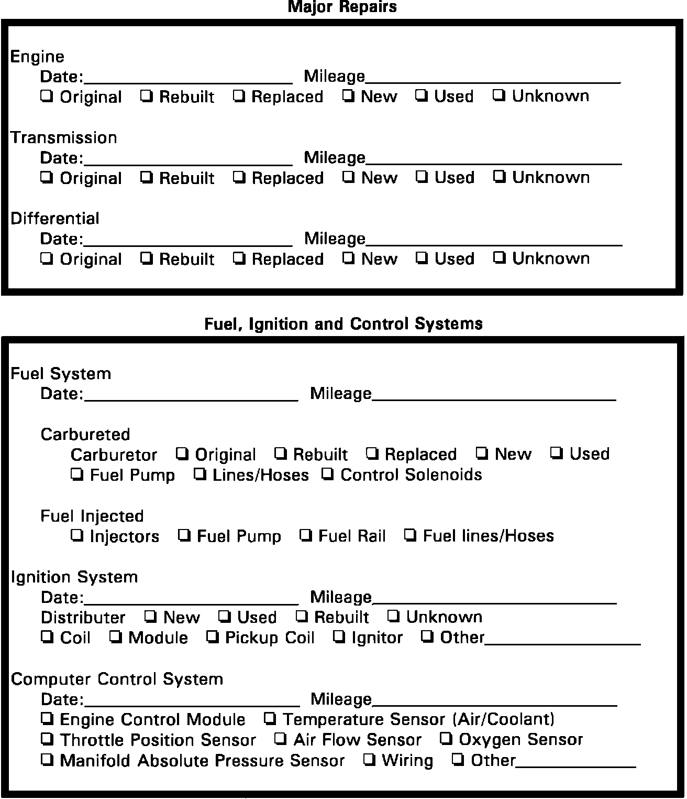

Flow of Diagnosis
Flow Of Diagnosis:

1. Utilize the REPAIR HISTORY and DRIVEABILITY WORKSHEETS in this section to provide better communication between the customer and the mechanic. This provides for more accurate and timely vehicle diagnosis/repair.
2. Check any Technical Service Bulletins that may apply to the vehicle being serviced. These bulletins may contain important information regarding warranty, recalls, revised service procedures, etc.
3. The On-Board Diagnostics will verify that the ECU sensors and circuits are functioning properly, or display any codes that may be stored in the computer memory. The procedures for extracting and clearing trouble codes are in COMPUTERIZED ENGINE CONTROLS.
4. The list of symptoms and their possible causes is used to aid in diagnosing intermittent problems or failures which do not store trouble codes in the computer memory. DIAGNOSIS BY SYMPTOM is located under TESTING PROCEDURES.
5. For testing components that will not produce trouble codes see COMPONENT TESTING.
Repair History (1 Of 2):

Repair History (2 Of 2):

REPAIR HISTORY
Driveability Worksheet (1 Of 2):

Driveability Worksheet (2 Of 2):

DRIVEABILITY WORKSHEETS